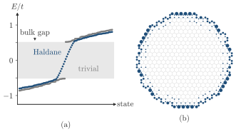

Page 1 of 16 of this session
3.1 What topological materials are
What do the materials that we call topological have in common? We will now see that it is a gap in the bulk together with states at the boundary, which the bulk forces to be there. This page gives the list of these materials, and the rest of the session builds the tools that describe them.
Before we go into the formalism, it is useful to have a rough classification in mind, so that the abstract tools that we are going to build have concrete targets. Topological materials are systems with an excitation gap in the bulk that at the same time have protected excitations at their surface or edge. This combination of a gapped bulk and a gapless boundary will appear again and again in this session, and it is the defining feature of these materials. The point is not that the edge happens to have low-energy states. The point is that the topology of the bulk forces them to be there.

Within this class, we will see the following systems in this session and in the next one.
The quantum Hall effect, which appears in two-dimensional electron gases and in graphene under a strong perpendicular magnetic field. It is the simplest topological state, and it is our starting point.
The quantum anomalous Hall effect, which is the same physics without any external magnetic field, and which we will construct explicitly in Section 3.10.
Quantum spin Hall insulators, which are in practice two copies of a quantum Hall state related by time reversal and put together, as we will see in Section 3.11.
Topological superconductors, whose surface excitations are Majorana modes. They are the basis of one route to topological quantum computing, and we will come back to them in detail in Session 5.
Topological semimetals, including Weyl semimetals, whose low-energy quasiparticles are Weyl fermions.
Topological Kondo insulators, which are an example of topology that survives in a strongly correlated many-body system.
Each entry has a material realization. These are graphene for the quantum Hall effect, Cr-doped (Bi,Sb)\(_2\)Te\(_3\) for the quantum anomalous Hall effect and HgTe/CdTe quantum wells for the quantum spin Hall effect. For a topological superconductor one example is a chain of Fe atoms on Pb, for a Weyl semimetal it is TaAs, and for the topological Kondo insulator it is SmB\(_6\). The notebook of the course does not simulate any of these compounds. What we will simulate, with the models that we build in this session, are minimal tight-binding versions of the first three items of the list above.

Each map shows a finite flake of the honeycomb lattice. Every site has one dot. A larger and darker dot means a larger local density of states. It is computed at the chemical potential, with the same scale in the three maps. The positions are in units of the first-neighbor distance \(a\). Which flake is an insulator in the bulk and a metal at the edge?
Show the answers
- A. ✗ False
This is false. This flake has no states at the chemical potential, in the bulk or at the edge, so it is an insulator everywhere. It has a staggered potential of \(0.5\) in units of the hopping, which opens a gap of \(1.0\). Its largest local density of states is less than a tenth of the one of the flake with the weight at the boundary.
- B. ✓ True
This is true. The weight sits on the sites of the boundary, and the map shows almost no weight inside the flake. This flake has the Haldane coupling \(0.1\) of the notebook, which is a second-neighbor hopping of \(0.087\). It opens a bulk gap of \(0.9\) in units of the hopping and gives states at the edge that cross this gap. The sites within three first-neighbor distances of the boundary are \(35\%\) of the sites and have \(70\%\) of the weight. Most of the rest is the small tail that the broadening \(0.03\) of the map gives to every site, which the flake with the staggered potential also has.
- C. ✗ False
This is false. The weight is on all the sites, so this flake is a metal in the bulk too. It has no term that opens a gap, and its chemical potential is moved by \(0.6\) into the band. The sites near the boundary have \(37\%\) of the weight, which is close to their share of the sites.
A material has a gapped bulk and edge states inside the gap. We change the potential at the edge. The bulk gap stays open, and no symmetry is broken. The edge states disappear. Is this material topological?
Show the answers
- A. ✗ False
This is false. The SSH chain with \(t=1/2\) has a gapped bulk and a state at zero energy at each end, and the ribbon of the Haldane model has edge branches inside the bulk gap. The reason given here fails, even if the answer “No” is right for this material.
- B. ✓ True
This is true. The bulk invariant forces the edge states, so a change of the edge that keeps the protecting symmetry cannot remove them. A Chern insulator needs no symmetry, and there a change of the edge only moves the states in energy. Here the states disappear with no symmetry broken, so they belong to this particular edge.
- C. ✗ False
This is false. Take a chain with hopping \(1\) and a staggered potential \(\pm1\), which is a trivial insulator with a gap from \(-1\) to \(1\). The last site has the potential \(-1\), and an extra potential of \(1\) on it gives a state at the energy \(-0.41\), inside the gap and on this site. It disappears when the extra potential goes back to zero, as in this question.
Edge states that a change of the edge can remove, with no symmetry broken, belong to one particular edge and are not protected.
- In Section 4.20 the quantum anomalous Hall state of Cr-doped (Bi,Sb)\(_2\)Te\(_3\) comes back, together with fractional Chern states at zero field.
- In Section 5.15 we build the Majorana modes of a topological superconductor, and in Section 5.14 its chiral edge looks like the edge of the figure above.
- In Section 8.13 we see how a Kondo lattice becomes an insulator, with SmB\(_6\) as the material.